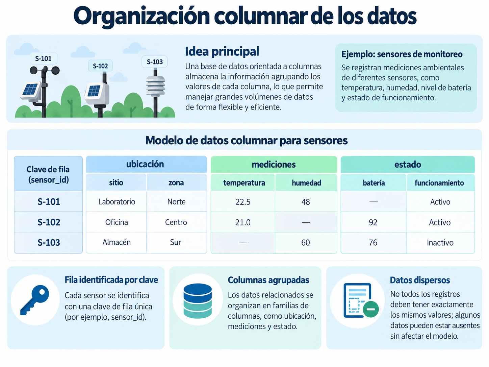
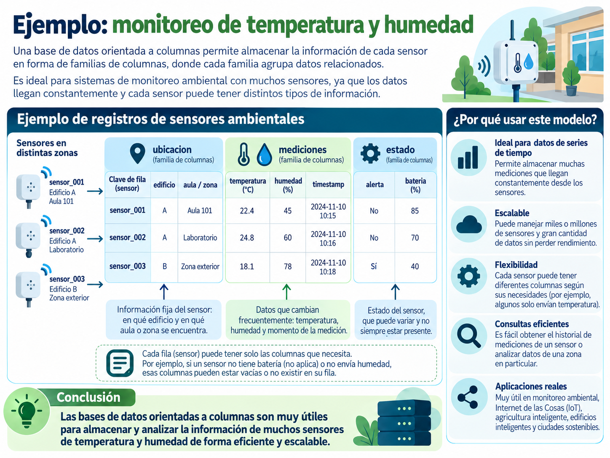

Fundamentos de las bases de datos de familias de columnas
1 Introducción
Las bases de datos de familias de columnas, también conocidas como bases de datos de columnas amplias (wide-column), constituyen un modelo de bases de datos no relacionales diseñado para organizar grandes cantidades de información y facilitar su distribución entre diferentes servidores.
Aunque utilizan conceptos como filas y columnas, su organización no necesariamente sigue la misma lógica de una base de datos relacional.
Para comprender su funcionamiento, utilizaremos como ejemplo un sistema de monitoreo ambiental que registra constantemente información proveniente de sensores instalados en diferentes edificios de una universidad.
Cada sensor puede generar datos como:
- Temperatura.
- Humedad.
- Ubicación.
- Estado del dispositivo.
- Fecha y hora de cada medición.
A partir de este ejemplo estudiaremos cómo se organiza la información, qué son las familias de columnas y cómo funcionan conceptos como el particionamiento y la escalabilidad horizontal.
2 ¿Qué son las bases de datos de familias de columnas?
Las bases de datos de familias de columnas organizan la información mediante filas identificadas por una clave y columnas que pueden representar diferentes características de los registros.
Este modelo está presente en tecnologías como:
- Apache Cassandra.
- Apache HBase.
- Google Bigtable.
Aunque pertenecen a una misma familia general, cada una implementa el modelo de manera diferente.
Imaginemos una universidad que cuenta con sensores ambientales instalados en diferentes edificios.
Uno de estos sensores podría registrar la siguiente información:
sensor_001
edificio: A
aula: 101
temperatura: 22.4
humedad: 45
bateria: 85Toda esta información corresponde al dispositivo identificado como sensor_001.
En algunos sistemas de familias de columnas, los registros pueden contener diferentes conjuntos de información. Por ejemplo, algunos sensores podrían registrar temperatura y humedad, mientras que otros únicamente temperatura.
El modelo de familias de columnas permite organizar grandes cantidades de información mediante claves de fila, columnas y estructuras diseñadas para distribuir los datos entre diferentes servidores.
3 ¿Cómo se organiza la información?
Para comprender este modelo podemos identificar tres elementos generales:
- Clave de fila.
- Columnas.
- Familias de columnas.
3.1 Clave de fila
La clave de fila (row key) permite identificar un registro.
Por ejemplo, nuestro sistema podría tener los siguientes sensores:
sensor_001
sensor_002
sensor_003Cada identificador corresponde a un dispositivo diferente.
A partir de esta clave es posible localizar la información asociada con cada sensor.
3.2 Columnas
Las columnas representan características o datos asociados con cada registro.
Por ejemplo:
sensor_001
edificio: A
aula: 101
temperatura: 22.4
humedad: 45En este caso, las columnas contienen información sobre la ubicación del dispositivo y las condiciones ambientales registradas.
3.3 Familias de columnas
Una familia de columnas representa una agrupación lógica de columnas relacionadas.
Siguiendo nuestro ejemplo, podemos imaginar tres grupos de información.
Ubicación
ubicacion
edificio: A
aula: 101Mediciones
mediciones
temperatura: 22.4
humedad: 45Estado
estado
bateria: 85
alerta: NoEsta representación nos permite comprender conceptualmente cómo puede agruparse información relacionada.
Sin embargo, la implementación concreta depende de la tecnología utilizada.
Por ejemplo, HBase trabaja explícitamente con familias de columnas, mientras que Cassandra organiza la información mediante tablas, particiones, filas y columnas definidas en un esquema.
Aunque Cassandra utiliza tablas, filas y columnas, su diseño no sigue exactamente la misma lógica que una base de datos relacional.
En Cassandra, las tablas se diseñan principalmente considerando las consultas que la aplicación necesita realizar.
4 Ejemplo de organización
Consideremos nuevamente nuestro sistema de monitoreo ambiental.
Cada sensor se identifica mediante una clave y registra distintos tipos de información relacionados con su ubicación, sus mediciones y el estado del dispositivo.

La Figure 1 muestra conceptualmente tres sensores con diferentes características.
Algunos dispositivos pueden registrar temperatura y humedad, mientras que otros podrían no generar todas las variables disponibles.
Esta situación permite introducir el concepto de datos dispersos.
4.1 ¿Qué son los datos dispersos?
Los datos dispersos son conjuntos de información en los que no todos los registros contienen valores para todas las columnas posibles.
Por ejemplo:
| Sensor | Temperatura | Humedad | Batería |
|---|---|---|---|
| sensor_001 | 22.4 | 45 | 85 |
| sensor_002 | 24.8 | 60 | |
| sensor_003 | 18.1 | 40 |
El segundo sensor no reportó información sobre su batería y el tercero no registró humedad.
En determinados sistemas de familias de columnas, los datos ausentes no necesitan almacenarse como valores individuales.
Esto puede resultar útil cuando se trabaja con dispositivos que tienen diferentes capacidades o producen distintos tipos de información.
No todos los sistemas de familias de columnas permiten agregar libremente cualquier columna a cada registro.
En Cassandra, las columnas ordinarias deben definirse mediante un esquema.
Por esta razón, debemos distinguir entre las características generales del modelo y la implementación específica de cada tecnología.
5 Diferencias respecto al modelo relacional
Las bases de datos relacionales y las bases de datos de familias de columnas pueden representar información mediante filas y columnas.
Sin embargo, existen diferencias importantes en la forma en que se diseñan, distribuyen y consultan los datos.
Consideremos nuevamente nuestro sistema de monitoreo ambiental.
En una base de datos relacional podríamos tener una tabla como la siguiente:
| Sensor | Edificio | Temperatura | Humedad |
|---|---|---|---|
| sensor_001 | A | 22.4 | 45 |
| sensor_002 | A | 24.8 | 60 |
| sensor_003 | B | 18.1 | 78 |
Si necesitamos conservar el historial de mediciones, podríamos crear otra tabla y relacionarla con la información de los sensores.
Por ejemplo:
SENSORES
------------------------
sensor_id
edificio
aula
MEDICIONES
------------------------
medicion_id
sensor_id
fecha_hora
temperatura
humedadEn un sistema de familias de columnas, la organización depende de la tecnología utilizada y de las consultas que necesitamos realizar.
En Cassandra, por ejemplo, podríamos diseñar una tabla específicamente para recuperar las mediciones de un sensor durante una fecha determinada.
La siguiente tabla resume algunas diferencias generales:
| Característica | Modelo relacional | Familias de columnas |
|---|---|---|
| Organización | Tablas relacionadas | Filas, columnas y estructuras según la tecnología |
| Esquema | Generalmente definido | Depende del sistema |
| Relaciones | Llaves foráneas y JOIN |
Generalmente se evitan relaciones complejas |
| Diseño | Basado en entidades y relaciones | Puede orientarse a las consultas |
| Distribución | Depende del gestor | Algunos sistemas están diseñados para múltiples nodos |
| Ejemplos | PostgreSQL, MySQL | Cassandra, HBase |
Estas diferencias no significan que un modelo sea mejor que otro.
Cada uno responde a necesidades diferentes.
Por ejemplo, un sistema universitario que administra estudiantes, materias, inscripciones y calificaciones puede funcionar adecuadamente mediante una base de datos relacional.
En cambio, una aplicación que recibe constantemente millones de mediciones provenientes de sensores puede beneficiarse de una base de datos distribuida diseñada para manejar grandes volúmenes de escritura.
La elección de una base de datos depende del tipo de información que necesitamos almacenar, de la cantidad de datos y de las consultas que realizará la aplicación.
6 Distribución y escalabilidad horizontal
Una característica importante de sistemas como Cassandra es su capacidad para distribuir información entre diferentes servidores.
Para comprenderlo, imaginemos que nuestra universidad comienza con únicamente diez sensores.
Cada sensor registra información cada cinco minutos.
Con el tiempo, el proyecto crece y se instalan:
10 sensores
100 sensores
1,000 sensores
10,000 sensoresCada uno genera nuevas mediciones constantemente.
La cantidad de información comienza a crecer rápidamente.
Una forma de afrontar este crecimiento consiste en aumentar los recursos del servidor.
6.1 Escalabilidad vertical
La escalabilidad vertical consiste en aumentar los recursos disponibles en un mismo servidor.
Por ejemplo:
- Incrementar la memoria RAM.
- Incorporar un procesador más potente.
- Aumentar la capacidad de almacenamiento.
Podemos representarlo de la siguiente manera:
Servidor
RAM: 8 GB
↓
RAM: 16 GB
↓
RAM: 32 GBEsta estrategia puede ser útil, pero existe un límite físico y económico para el crecimiento de una sola máquina.
6.2 Escalabilidad horizontal
La escalabilidad horizontal consiste en incorporar servidores adicionales para distribuir el trabajo.
Por ejemplo:
Aplicación
|
-------------------------
| | |
Nodo 1 Nodo 2 Nodo 3
| | |
-------------------------
|
Datos distribuidosEn este escenario, diferentes nodos participan en el almacenamiento y procesamiento de la información.
Si las necesidades del sistema aumentan, podrían agregarse más nodos.
Nodo 1
Nodo 2
Nodo 3
Nodo 4
Nodo 5Esta capacidad es especialmente importante en aplicaciones que generan grandes cantidades de información.
Sin embargo, agregar servidores no garantiza automáticamente un mejor rendimiento.
También influyen factores como:
- La forma en que se distribuyen los datos.
- El diseño de las consultas.
- La configuración del sistema.
- La capacidad de cada nodo.
Escalabilidad vertical: aumentar los recursos de un servidor.
Escalabilidad horizontal: incorporar más servidores para distribuir el trabajo.
7 Clúster y nodos
En una base de datos distribuida como Cassandra, diferentes servidores pueden trabajar de manera conjunta.
Cada servidor que forma parte del sistema se denomina nodo.
Un conjunto de nodos que trabajan de manera coordinada forma un clúster.
Por ejemplo:
Clúster de Cassandra
┌──────────┐
│ Nodo 1 │
└──────────┘
┌──────────┐
│ Nodo 2 │
└──────────┘
┌──────────┐
│ Nodo 3 │
└──────────┘Los datos pueden distribuirse entre los diferentes nodos del clúster.
Esto nos lleva a una pregunta importante:
¿Cómo determina el sistema qué datos deben almacenarse juntos y cómo distribuirlos entre los nodos?
Para comprenderlo necesitamos estudiar el particionamiento.
8 Particionamiento de los datos
Cuando una base de datos utiliza varios servidores necesita determinar cómo distribuir la información entre ellos.
El particionamiento consiste en dividir los datos en conjuntos que puedan almacenarse y procesarse de manera distribuida.
Imaginemos nuevamente nuestro sistema de sensores.
Podemos tener miles de dispositivos generando mediciones constantemente.
Una posible estrategia consiste en agrupar las mediciones utilizando:
- El identificador del sensor.
- La fecha de las mediciones.
Por ejemplo:
(sensor_001, 2026-10-01)
(sensor_001, 2026-10-02)
(sensor_002, 2026-10-01)
(sensor_002, 2026-10-02)Cada combinación agrupa las mediciones de un sensor correspondientes a un día determinado.
Podríamos visualizarlo de la siguiente manera:
(sensor_001, 2026-10-01)
10:00 22.4 °C 45 %
10:05 22.8 °C 46 %
10:10 23.1 °C 47 %
(sensor_002, 2026-10-01)
10:00 24.8 °C 60 %
10:05 25.0 °C 61 %De esta manera, las mediciones correspondientes al mismo sensor y fecha se encuentran agrupadas.
En Cassandra, la clave de partición determina cómo se distribuyen los datos entre los nodos del clúster.
Conceptualmente podríamos tener:
Clave de partición
(sensor_id, fecha)Por ejemplo:
(sensor_001, 2026-10-01)
(sensor_001, 2026-10-02)
(sensor_002, 2026-10-01)Cada una representa una partición diferente.
8.1 ¿Por qué es importante la clave de partición?
Una buena clave de partición ayuda a distribuir los datos de manera adecuada.
Una mala elección puede provocar que demasiados registros se concentren en una misma partición o que determinadas partes del sistema reciban demasiadas solicitudes.
Por esta razón, en Cassandra debemos pensar desde el inicio:
¿Qué información necesito consultar?
Por ejemplo, si frecuentemente necesitamos responder:
¿Cuáles fueron las mediciones del sensor 001 durante el 1 de octubre?
Entonces organizar la información mediante el sensor y la fecha puede resultar conveniente.
En Cassandra normalmente primero pensamos en las consultas que realizará la aplicación y después diseñamos las tablas necesarias para responderlas eficientemente.
9 Ejemplo aplicado: monitoreo de temperatura y humedad
Imaginemos que una universidad instala sensores ambientales en diferentes edificios.
Cada dispositivo registra periódicamente información sobre las condiciones del lugar donde se encuentra.
Los sensores pueden generar los siguientes datos:
- Identificador del sensor.
- Edificio.
- Aula o zona.
- Temperatura.
- Humedad.
- Fecha y hora de la medición.
- Estado del dispositivo.

La Figure 2 representa conceptualmente cómo puede organizarse la información generada por diferentes sensores.
9.1 Información del dispositivo
Cada sensor necesita un identificador y una ubicación.
Por ejemplo:
sensor_001
edificio: A
aula: 101Estos datos permiten identificar dónde se encuentra instalado el dispositivo.
9.2 Información de las mediciones
Un mismo sensor puede generar múltiples registros durante el día.
Por ejemplo:
| Sensor | Hora | Temperatura | Humedad |
|---|---|---|---|
| sensor_001 | 10:00 | 22.4 | 45 |
| sensor_001 | 10:05 | 22.8 | 46 |
| sensor_001 | 10:10 | 23.1 | 47 |
| sensor_002 | 10:00 | 24.8 | 60 |
| sensor_002 | 10:05 | 25.0 | 61 |
Observa que un sensor no genera una única temperatura.
Produce nuevas mediciones conforme transcurre el tiempo.
Por lo tanto, necesitamos una estructura que permita conservar el historial de mediciones y no solamente la última lectura recibida.
Por ejemplo:
sensor_001
10:00 → 22.4 °C
10:05 → 22.8 °C
10:10 → 23.1 °CEsta característica será importante cuando trabajemos posteriormente con Apache Cassandra.
10 ¿Qué consultas podríamos realizar?
Antes de diseñar una base de datos es importante identificar las consultas que realizará la aplicación.
Nuestro sistema de monitoreo ambiental podría necesitar responder preguntas como:
- ¿Cuáles fueron las mediciones del sensor 001 durante una fecha determinada?
- ¿Qué temperatura registró un sensor durante las últimas horas?
- ¿En qué momento se alcanzó determinada temperatura?
- ¿Qué registros históricos necesitamos recuperar para realizar un análisis?
Estas preguntas influyen en la forma en que organizaremos los datos.
Por ejemplo, si utilizamos Cassandra, podríamos organizar las mediciones mediante:
sensor + fechay posteriormente ordenar las diferentes lecturas mediante la hora.
Conceptualmente:
(sensor_001, 2026-10-01)
10:00
10:05
10:10
10:15Esto permitiría recuperar fácilmente el historial de un dispositivo durante un periodo determinado.
Las figuras utilizadas en este apunte representan conceptualmente las características del modelo de familias de columnas.
Cuando trabajemos específicamente con Cassandra utilizaremos tablas, claves de partición y columnas de agrupamiento para almacenar múltiples mediciones de cada sensor.
11 Ventajas del modelo
Los sistemas de familias de columnas pueden ofrecer diferentes ventajas dependiendo de la tecnología utilizada y del problema que se desea resolver.
11.1 Distribución de la información
Tecnologías como Cassandra están diseñadas para trabajar con varios nodos.
Esto permite distribuir los datos entre diferentes servidores.
11.2 Escalabilidad horizontal
El sistema puede incorporar nodos adicionales cuando aumentan las necesidades de almacenamiento o procesamiento.
11.3 Manejo de grandes volúmenes de datos
Este tipo de sistemas puede utilizarse en aplicaciones que generan grandes cantidades de registros.
Por ejemplo:
- Sistemas de monitoreo.
- Sensores IoT.
- Registros de eventos.
- Aplicaciones distribuidas.
- Plataformas con grandes volúmenes de escritura.
11.4 Organización orientada a las consultas
En Cassandra, las tablas se diseñan considerando las consultas que la aplicación necesita realizar.
Este enfoque es diferente al utilizado normalmente en el diseño de bases de datos relacionales.
12 Limitaciones y consideraciones
El modelo también presenta aspectos que debemos considerar.
12.1 Diseño de las consultas
En Cassandra es importante conocer anticipadamente las consultas que realizará la aplicación.
No conviene diseñar las tablas como si fueran tablas relacionales que posteriormente serán combinadas mediante numerosos JOIN.
12.2 Claves de partición
Una mala elección de la clave de partición puede generar una distribución poco equilibrada de los datos.
También puede producir particiones demasiado grandes o concentrar demasiadas solicitudes en determinadas partes del sistema.
12.3 Relaciones entre entidades
Cuando una aplicación requiere realizar relaciones complejas entre muchas entidades o ejecutar consultas muy variables, otros modelos de bases de datos pueden resultar más apropiados.
12.4 Complejidad operativa
Trabajar con sistemas distribuidos implica comprender conceptos adicionales.
Por ejemplo:
- Nodos.
- Particiones.
- Replicación.
- Disponibilidad.
- Consistencia.
Por esta razón, la elección de una tecnología debe considerar las necesidades reales de la aplicación.
13 Tecnologías representativas
Dentro de las bases de datos de familias de columnas encontramos diferentes tecnologías.
13.1 Apache Cassandra
Apache Cassandra es una base de datos NoSQL distribuida que utiliza un modelo de columnas amplias.
Está diseñada para distribuir información entre varios nodos y trabajar con grandes volúmenes de datos.
Utiliza un lenguaje de consultas llamado CQL (Cassandra Query Language).
En las siguientes clases utilizaremos Cassandra para:
- Crear espacios de claves.
- Crear tablas.
- Insertar registros.
- Consultar información.
- Trabajar con claves de partición.
- Organizar historiales de mediciones.
13.2 Apache HBase
Apache HBase es una base de datos distribuida inspirada en el modelo de Google Bigtable.
Utiliza claves de fila y familias de columnas y forma parte del ecosistema de Apache Hadoop.
13.3 Google Bigtable
Google Bigtable es un servicio de base de datos de columnas amplias administrado por Google Cloud.
Está diseñado para almacenar grandes cantidades de información y atender aplicaciones que necesitan trabajar con datos a gran escala.
| Tecnología | Característica general |
|---|---|
| Apache Cassandra | Base de datos distribuida de columnas amplias |
| Apache HBase | Almacenamiento distribuido con familias de columnas |
| Google Bigtable | Servicio administrado de columnas amplias |
Aunque pertenecen a una misma familia general, estas tecnologías presentan diferencias importantes en su arquitectura, modelo de datos y forma de realizar consultas.
14 Relación con los modelos anteriores
Hasta ahora hemos estudiado tres modelos principales de bases de datos no relacionales.
| Modelo | Organización principal | Ejemplo |
|---|---|---|
| Documental | Documentos con campos y valores | MongoDB |
| Clave–valor | Claves asociadas con valores | Redis |
| Familias de columnas | Filas y columnas organizadas según el sistema | Cassandra |
Estos modelos no son necesariamente excluyentes.
Una misma aplicación puede utilizar diferentes tecnologías cuando cada una responde a una necesidad específica.
Por ejemplo, en nuestro sistema de monitoreo ambiental podríamos utilizar:
MongoDB
Información general de los sensoresRedis
Última temperatura registradaCassandra
Historial de miles o millones de medicionesPodemos representarlo de la siguiente manera:
Aplicación de monitoreo
|
-------------------------
| | |
MongoDB Redis Cassandra
| | |
Datos Datos Historial
generales rápidos de medicionesLa decisión debe basarse en las necesidades de almacenamiento, consulta y procesamiento de la aplicación.
15 Cierre
Las bases de datos de familias de columnas constituyen una alternativa para almacenar y distribuir grandes cantidades de información.
A lo largo de este apunte observamos que sus características principales incluyen:
- Organización mediante claves y columnas.
- Posibilidad de trabajar con grandes volúmenes de datos.
- Distribución de información entre diferentes nodos.
- Escalabilidad horizontal.
- Uso de particiones para organizar los registros.
- Diseño de estructuras considerando las consultas de la aplicación.
El ejemplo de monitoreo ambiental nos permitió comprender que un sensor puede generar numerosas mediciones a lo largo del tiempo.
Por esta razón, no basta con almacenar únicamente la última temperatura registrada.
Necesitamos una estructura que permita conservar y consultar todo el historial de información.
En la siguiente clase utilizaremos Apache Cassandra y el lenguaje CQL para construir este sistema de monitoreo ambiental y observar cómo se aplican los conceptos estudiados.